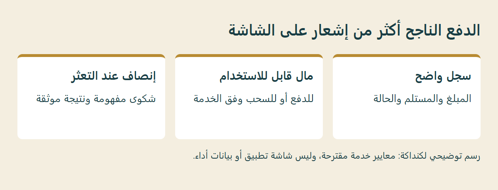

مسودة لمراجعة صاحب الموقع — غير معتمدة للنشر
Initial manuscript; research and image checks remain. مسودة أولى؛ البحث وفحص الصور لم يكتملَا.
اللحظة المهمة في الدفع ليست لحظة فتح التطبيق، بل اللحظة التي يستطيع فيها الشخص استخدام المال. فالتحويل الذي يظهر في شاشة ولا يمكن به سداد مورد أو شراء دواء أو سحب نقد عند الحاجة لم يؤد غرضه بعد.
لنتخيل صاحب متجر ينتظر التأكيد، بينما يؤكد العميل أن المبلغ خرج من حسابه. هذا مثال توضيحي، لا مقابلة صحفية. لا تُحل المشكلة بمجرد مطالبة الطرفين بمزيد من الألفة مع التقنية. إنهما يحتاجان إلى سجل مفهوم للمعاملة وإلى جهة تستطيع حسم الاختلاف.
ينبغي أن يبدأ نقاش المدفوعات الرقمية في السودان من الاستخدام الناجح، ومما يحدث حين يفشل. قد تكون زيادة الحسابات وتنزيلات التطبيقات مفيدة، لكنها لا تقيس وحدها قدرة الناس على التحكم في أموالهم.
يستند تقييم برنامج الأمم المتحدة الإنمائي للثقافة المالية الرقمية، الصادر في نوفمبر ٢٠٢٦، إلى ١٥٢ مقابلة مع مستهلكين في نهر النيل وكسلا والقضارف، مع مشاورات لمقدمي الخدمات. ويحدد احتياجات تعليم عملية وعوائق أمام الاستخدام الآمن. عينته الصغيرة وغير العشوائية لا تقدم تقديراً قومياً، ولا تثبت نجاح برنامج تدريب. تكمن فائدتها في تحديد مشكلات تستحق الاختبار والمعالجة.[1]
ويهم هنا التمييز بين الوصول والقدرة على الاستخدام. فقد يتاح لشخص هاتف ذكي أحياناً، لكنه يعتمد على آخر لقراءة رسالة أو إكمال معاملة. تساعده المساندة، لكنها قد تقلل خصوصيته أو سيطرته إذا لم يستطع فهم ما جرى بنفسه.
ليس الحل إحراج من يطلب المساعدة. ينبغي تصميم الخدمة وفق الاستخدام الفعلي: لغة واضحة، وتأكيدات مقروءة، وقنوات شكوى ميسرة، وخيارات حقيقية بشأن المساعدة. هذه عناصر في الخدمة نفسها، لا في كتيب التدريب وحده.
يمر الدفع بأكثر من الهاتف. فالاتصالات والكهرباء وأنظمة مقدم الخدمة وترتيبات التسوية، وأحياناً النقد المتاح لدى الوكيل، كلها مهمة. ولا تستطيع واجهة جيدة وحدها إصلاح سلسلة معطلة خلفها.
كان البنك الدولي قد أشار في وثيقة إصلاح سودانية عام ٢٠٢١ إلى ضعف البنية المالية والشمول المالي بوصفهما عائقين أمام إيصال الدعم الاجتماعي. هذه خلفية تاريخية، وليست وصفاً لامتلاك الحسابات اليوم.[2] وتثير قراءتها مع تقييم البرنامج الأحدث سؤالاً: إلى أي حد ظل المستخدم يتحمل عبئاً سببه الخدمة نفسها؟
يضيف التقرير السنوي لصندوق STARS التابع للبنك الدولي للسنة المالية ٢٠٢٦ منظوراً مؤسسياً. فهو يلخص تقييماً للمدفوعات أُرسلت مسودته النهائية إلى البنك المركزي في يونيو ٢٠٢٦ للمراجعة والتحقق. ويصف الملخص بنية ما قبل الحرب وفجوات الربط بين الأنظمة وما أعقب ذلك من تعطّل. راجعنا هذا الملخص، لا التقييم الأصلي، وهو لا يثبت الخدمات العاملة اليوم في كل منطقة.[4]
إذا احتاج التحويل الفاشل إلى رحلات متكررة ومكالمات مدفوعة وأيام بلا وصول إلى المال، فإن الرسم المعلن لا يعكس كلفته الكاملة. لا يقدّر هذا المقال تلك الكلفة قومياً؛ بل يدعو مقدمي الخدمات والجهات الرقابية إلى قياسها. فقد تكون مدة إعادة مبلغ معاملة فاشلة بأهمية سرعة إرسال معاملة ناجحة.
يمكن أن تبدأ جلسة مفيدة بمهمة محددة: تعيين المستلم، وفهم الرسم الكامل، ومراجعة المبلغ، والتعرف على حالة العملية والعثور على الإيصال. ثم تنتقل عمداً إلى التعثر. ماذا تعني معاملة معلقة؟ وكيف تُقدم الشكوى من دون كشف بيانات الدخول السرية؟ وما الرقم الذي يحدد المعاملة محل النزاع؟
هذه اختبارات تصميم مقترحة، وليست تعليمات موحدة لتطبيق مصرفي بعينه. تختلف الإجراءات، ويجب الرجوع إلى الإرشاد الرسمي الحالي لكل خدمة. كما ينبغي اختبار مواد التدريب مع مستخدميها الفعليين، بمن فيهم من تصعب عليهم القراءة أو يستخدمون أجهزة مشتركة.
ولا يصح اعتبار حضور ورشة دليلاً على القدرة على التعامل مع النظام. يحتاج الفهم العملي إلى ملاحظة. وبالمثل، لا ينبغي لوم العميل على واجهة مربكة يعجز الموظفون أنفسهم عن شرحها بسهولة. يوفر تقييم البرنامج أساساً للعمل، لكنه لا يغني عن تقييم الخدمة المنفذة فعلاً.[1]

ليس ضرورياً وضع النقد والمدفوعات الرقمية في معسكرين متنافسين. قد يريد شخص استلام المال عن بعد ثم إنفاقه نقداً محلياً، أو قبول دفع إلكتروني مع سداد بعض الموردين بالنقد. ينبغي أن يجعل النظام هذه الانتقالات واضحة الكلفة وقابلة للتوقع.
لذلك فإن توافر الوكلاء ليس مجرد خريطة لنقاط الخدمة. لا تتساوى نقطة عاجزة عن إتمام المعاملة في الوقت المطلوب مع نقطة قادرة عليها. ويجب التمييز بين الوصول المعلن والوصول القابل للاستخدام، وإظهار شروط السحب النقدي قبل التزام المستخدم بالتحويل.
كما لا ينبغي لبرنامج دفع عام افتراض أن التطبيق هو الطريق الوحيد المقبول إلى دعم أساسي. يلزم النظر في بدائل وقنوات مساعدة لمن تعوقهم الاتصالات أو الإعاقة أو الوثائق أو غياب الجهاز. تصميمها يحتاج عناية، لكن تجاهلها قد يحول وسيلة تقنية مريحة إلى حاجز أمام استحقاق.
تقترح كنداكة بطاقة عامة محدودة لقياس الخدمة: معدلات نجاح واضحة التعريف، ووقت معالجة المعاملات المتعثرة، ونتائج الشكاوى، والرسوم، وتوافر الخدمة. وينبغي التفريق بين أنواع الخدمات والمواقع مع حماية الخصوصية؛ فقد يخفي المتوسط القومي خدمة غير قابلة للاستخدام في منطقة بعينها.
تأتي زيادة الحسابات بجانب هذه المقاييس، لا فوقها، وكذلك الوصف الصريح لمن بقي خارج الخدمة. وتحتاج المقارنة إلى قواعد إبلاغ تحددها الجهات الرقابية. والتحقق المستقل من الأرقام أهم من لوحة عرض جذابة.
يسأل مقالنا عن العملة كيف يستعيد السودان الثقة في الجنيه. أما هنا فنتناول طبقة أخرى من الثقة: هل ينتج أمر الدفع نتيجة قابلة للاستخدام، وهل توجد وسيلة إنصاف حين لا يحدث ذلك؟[3] لا ينبغي أن يفهم الناس النظام المصرفي كله ليعرفوا أين ذهب مالهم. إنهم يحتاجون إلى خدمة تستطيع الإجابة وتصحيح الخطأ.
المراجع
[1] برنامج الأمم المتحدة الإنمائي، الثقافة المالية الرقمية في السودان، نوفمبر ٢٠٢٦؛ روجعت أجزاء من الملخص والمنهج والنتائج: https://www.undp.org/sites/g/files/zskgke326/files/2026-11/dfl.pdf
[2] البنك الدولي، تمويل إعادة الانخراط والإصلاح في السودان، ٢٠٢١: https://documents1.worldbank.org/curated/en/251051616767309548/pdf/Sudan-Reengagement-and-Reform-Development-Policy-Financing-Project.pdf
[3] كنداكة، إعادة بناء الثقة في الجنيه: https://kandaka.com/ar/development/rebuild-trust-sudanese-pound/
[4] World Bank / البنك الدولي، STARS Annual Report FY2026, pp. 18–19: https://documents1.worldbank.org/curated/en/099346011052631617/pdf/IDU-014db926-ab10-4468-928f-82179522ff2e.pdf
ملاحظة للمراجعة: لا يزال التحقق من شروط الشكاوى لدى مقدمي الخدمات والادعاءات التشغيلية مطلوباً؛ لم نراجع التقييم الأصلي للمدفوعات.